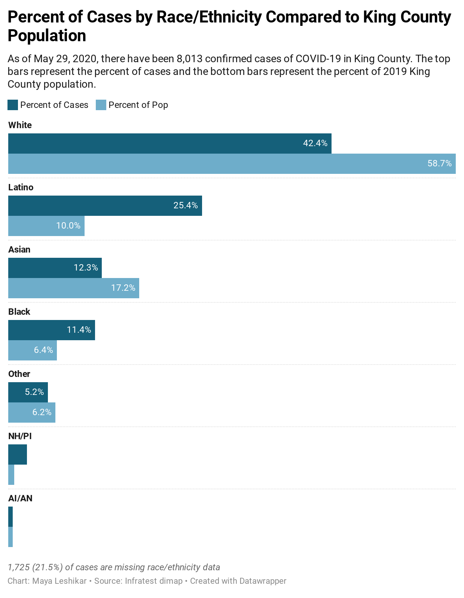

How COVID-19 is disproportionately affecting Seattle's communities of color
The coronavirus is hitting black and hispanic populations in Seattle.
Words, words, words.
As climate change news travels the world, it is captured in local headlines and streamlined by news agencies. Disasters and crises spark Wikipedia entries and resonate in social media postings. The coverage of typhoon Hagibis ranges from concerns about the scheduled Grand Prix Formula 1 to the cancelled Rugby world cup and its effects on the Italian team, in news outlets across Europe. In Japan, besides the expected cautionary articles and sharing of tips and tricks of how to prepare for this tremendous storm, Instagram posts include small messages of relief, of looking forward to the time that can be spent with family while hiding out from the typhoon. The storytelling platform presented here is inspired by such relatable local stories of the impact of climate change: everyday encounters with through drought, flood, storms, air pollution, migration, and typhoons. A monster approaches.
In Japan, besides the expected cautionary articles and sharing of tips and tricks of how to prepare for this tremendous storm, Instagram posts include small messages of relief, of looking forward to the time that can be spent with family while hiding out from the typhoon. The storytelling platform presented here is inspired by such relatable local stories of the impact of climate change: everyday encounters with through drought, flood, storms, air pollution, migration, and typhoons. A monster approaches.
The entry point is Typhoon Hagibis, the 'super typhoon' that is expected to hit Japan on Saturday 12 October 2019. Using Wikipedia, the storm is explained in factual information. Building on news coverage from newspapers across the globe, this explanation is transformed to include local perspectives from afar. The platform's interface presents both global news coverage and personal nano-stories in audio form, in an effort to present layered climate narratives.
A monster approaches...
— Instagram @sirirdgaf

— Wikimedia